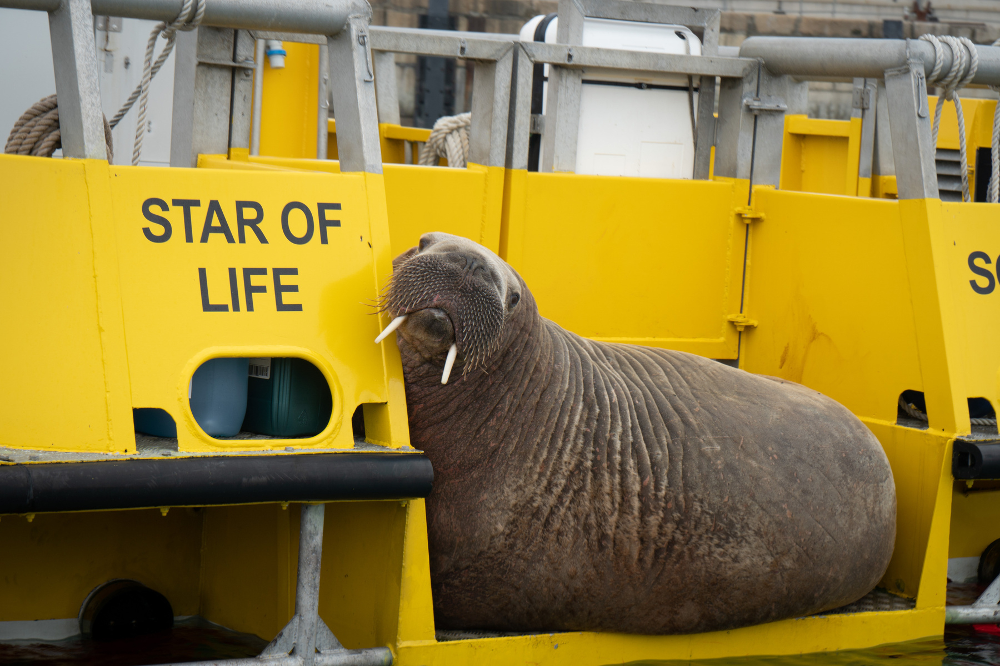
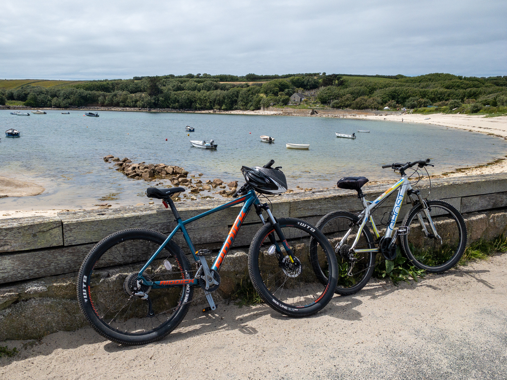
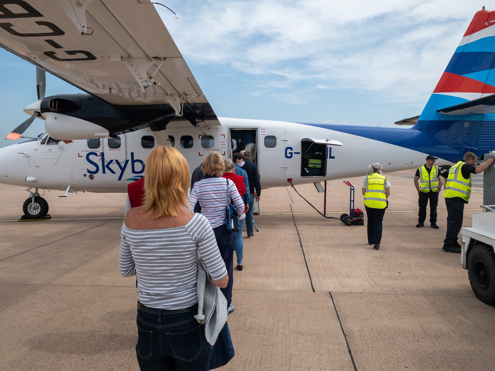

Former Manchester United defender Gary Neville had a message for politicians of all stripes: “The standards of leaders in this country in the last couple years has been poor. And looking at that man there that’s everything a leader should be: respectful, humble, telling the truth”.
Here’s “Wally” the walrus that is famous around the Isles of Scilly at the moment. I spotted him chilling out on the back of the Scilly water ambulance today.
Sony a6300, Sony E 16-70 F4 ZA OSS
📷
Cycle tour of St. Mary’s, Isles of Scilly. It’s the best way to see the island and suits the slower pace of life here.
iPhone 11, Lightroom app, processed in Lightroom Classic

iPhone 11, Lightroom app, processed in Lightroom Classic
🚲📷
View of Hugh Town harbour on St. Mary’s, Isles of Scilly taken from our hotel room this morning.

iPhone 11, Lightroom app, processed in Lightroom Classic
📷
First flight for over 2 years, from Exeter to St. Mary’s, Isles of Scilly, on the smallest plane I’ve ever been on. 
iPhone 11, Lightroom app, processed in Lightroom Classic
📷
Finished reading: The Shadows of London (Joseph Bridgeman series, Book 2) by Nick Jones. I was lucky enough to have a pre-release copy📚
Listening to the new album from Hiss Golden Messenger this morning whilst doing the weekly reports...
Listen on Spotify.
🎶
I really liked the detail on this gnarly old tree we saw on our walk yesterday.

iPhone 11, Lightroom app, processed in Lightroom Classic
📷
Finished reading: Hitman Anders and the Meaning of It All by Jonas Jonasson 📚
Gentle ride to Malmesbury for coffee and cake with Janet.

iPhone 11, Lightroom app, processed in Lightroom Classic
📷
View of St. Giles Church, Tytherton Kellaways, Wiltshire from across the meadow.

iPhone 11, Lightroom app, processed in Lightroom Classic
📷


My Album of the Week is Seeking New Gods, another solo release from Super Furry Animals' frontman Gruff Rhys..
Listen on Tidal:
🎶


 I have recently started to use
I have recently started to use